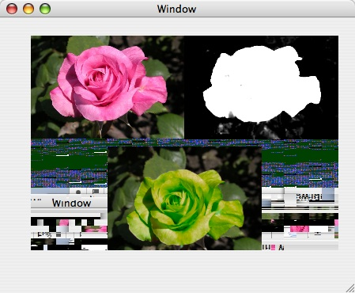
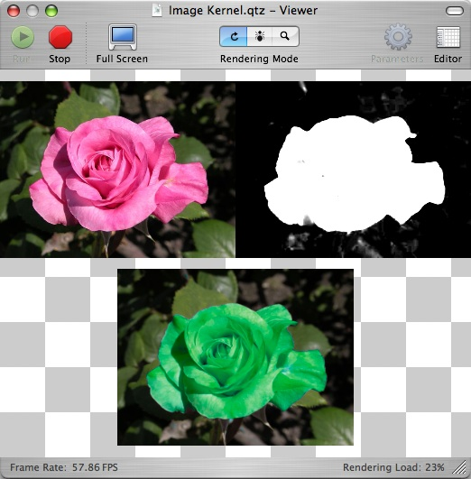

Q: Why does my Quartz Composer composition render with a corrupted background in the QCView?A: When rendered in a QCView, some compositions will show corrupted pixels in the background, as in the following example: Figure 1: A composition rendering with a corrupted background in a QCView.  The reason is that such compositions do not paint the background of the view. When viewed in Quartz Composer viewer window, those compositions do not show corrupted background pixels since the background is "forced clear" to a white-gray checkerboard (unless this is explicitly disabled in the Viewer menu). The areas of the background not painted by the composition are where the checkerboard is visible: Figure 2: The same composition displayed in the Quartz Composer Viewer window.  To fix the issue and have the composition not show corrupted pixels in the QCView, make sure it paints its entire background (using a Clear patch or a Gradient patch for example) and the checkerboard is not visible anymore. Note: For compatibility reasons with QuickTime standards, Quartz Composer Compositions played through QuickTime will always have their background painted with black and a fully transparent alpha channel. Document Revision History| Date | Notes |
|---|
| 2005-06-01 | Describes the circumstances in which the QCView background may render corrupted. |
Posted: 2005-06-01
|